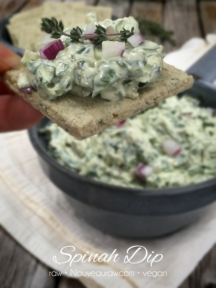
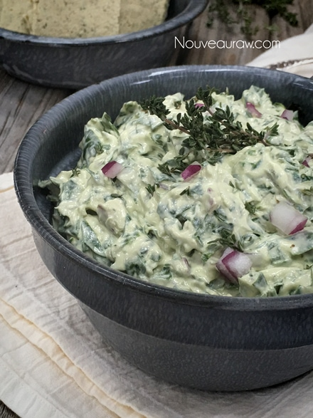
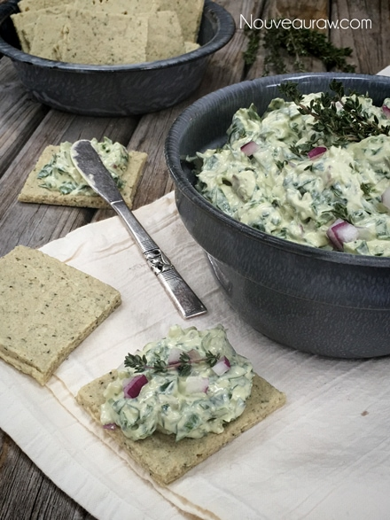

~ raw, vegan, gluten-free ~
This vegan spinach dip is a “show-stopping” recipe to add to your repertoire. I will go as far as saying, “Let me show you the way to heaven with a spoon!” It is creamy, full-bodied, and sumptuous. It’s so amazing that this can be achieved by using only whole foods and no added substitutes.
You don’t have to be a raw foodie to partake of this recipe. Next time you go to a party replace with the typical dairy laden, colon clogging, “run of the mill” stuff with this and be prepared to wow everyone.
You see I created this recipe for my little sister who is serious about spinach dip. She knows her stuff and trust me, I was sweating bullets as I watched her take the first bite.
Her response… She said that she wanted the recipe so she could make it for her co-workers. I sighed a sigh of relief, sponged the wet dew from my forehead and grinned from ear to ear. I normally can’t pull the wool over her eyes when it comes to dairy products, but this recipe fooled her. :)
This recipe is light and refreshing that can only be achieved with fresh spinach. I don’t recommend using frozen spinach because as it thaws it will release a lot of water and “muddy” up your dip. Although this recipe can be eaten right away, I will say that it tastes better the next day. You will notice a tiny bit of liquid on top of the bowl after it sits overnight. Not to be alarmed, just stir it back in and enjoy.
I served this dip with my “Club” Crackers which can be found (here), but don’t limit to just that one. I have so many wonderful cracker recipes that it would taste wondrous upon. Click (here) to flip through them. I hope you enjoy this recipe. Blessings, amie sue
Yields 5 cups dip
- 8 packed cups (263 g) spinach
- 1/2 red onion, diced (3/4 cup, 90 g)
Sauce: yields 4 1/2 cups
- 1 cup (195 g) water
- 1/3 cup (70 g ) fresh-squeezed lemon juice
- 2 cups (279 g) raw cashew pieces, soaked 2+ hours
- 2 Tbsp (12 g) nutritional yeast
- 2 – 4 (3-6 g) garlic cloves
- 1/2 – 1 tsp (7 g) Himalayan pink salt
- 2-4 Tbsp (20-40 g) organic, cold-pressed olive oil
Preparation:
- After soaking the cashews, drain and rinse before adding to the recipe.
- Chop the spinach and red onion, place in mixing bowl.
- Place the ingredients in the following order into the blender; water, lemon juice, cashews, nutritional yeast, garlic, and salt. Blend until smooth.
- Depending on the blender, this can take 1-3 minutes. Once the sauce is smooth, drizzle in the olive oil while the blender is running. Blend just until incorporated.
- Pour the sauce into the bowl with spinach and onion and mix.
- Chill for 1-2 hours to increase the dips thickness.
- Garnish with chopped red bell pepper or more onion for color.
- This should keep for 2-3 days in the fridge. I don’t recommend freezing.

